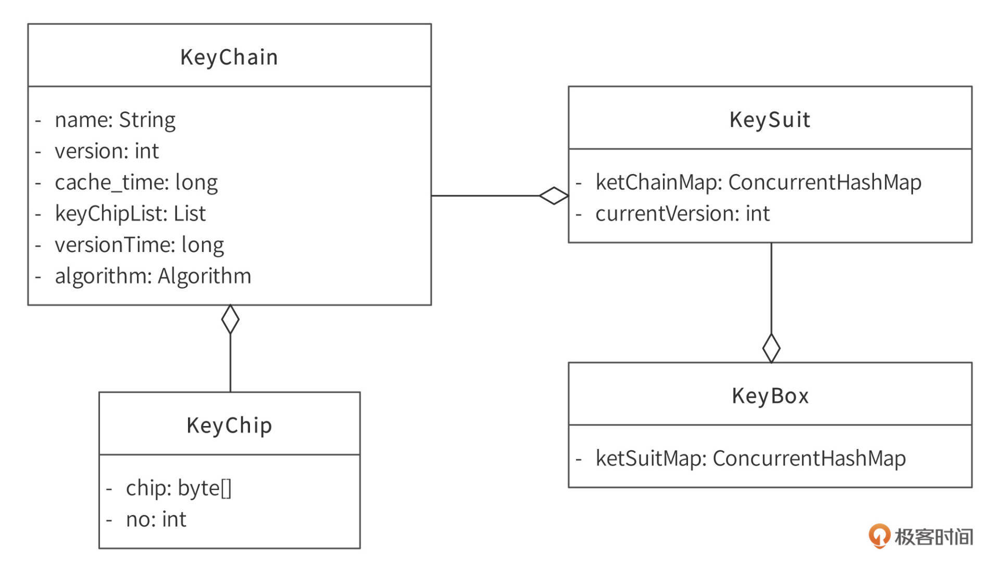

- 00 开篇词 “附身”大厂架构师，身临其境设计高并发系统.md.html
- 01 软件建模与文档：架构师怎样绘制系统架构蓝图？.md.html
- 02 高并发架构设计方法：面对高并发，怎么对症下药？.md.html
- 03 短 URL 生成器设计：百亿短 URL 怎样做到无冲突？.md.html
- 04 网页爬虫设计：如何下载千亿级网页？.md.html
- 05 网盘系统设计：万亿 GB 网盘如何实现秒传与限速？.md.html
- 06 短视频系统设计：如何支持三千万用户同时在线看视频？.md.html
- 07 海量数据处理技术回顾：为什么分布式会遇到 CAP 难题？.md.html
- 08 秒杀系统设计：你的系统可以应对万人抢购盛况吗？.md.html
- 09 交友系统设计：哪种地理空间邻近算法更快？.md.html
- 10 搜索引擎设计：信息搜索怎么避免大海捞针？.md.html
- 11 反应式编程框架设计：如何使方法调用无阻塞等待？.md.html
- 12 高性能架构的三板斧：分析系统性能问题从哪里入手？.md.html
- 13 微博系统设计：怎么应对热点事件的突发访问压力？.md.html
- 14 百科应用系统设计：机房被火烧了系统还能访问吗？.md.html
- 15 限流器设计：如何避免超预期的高并发压力压垮系统？.md.html
- 16 高可用架构的十种武器：怎么度量系统的可用性？.md.html
- 17 Web 应用防火墙：怎样拦截恶意用户的非法请求？.md.html
- 18 加解密服务平台：如何让敏感数据存储与传输更安全？.md.html
- 19 许可型区块链重构：无中心的区块链怎么做到可信任？.md.html
- 20 网约车系统设计：怎样设计一个日赚 5 亿的网约车系统？.md.html
- 21 网约车系统重构：如何用 DDD 重构网约车系统设计？.md.html
- 22 大数据平台设计：如何用数据为用户创造价值？.md.html
- 结束语 一个架构师的一天.md.html
- 捐赠
18 加解密服务平台：如何让敏感数据存储与传输更安全？
你好，我是李智慧。
在一个应用系统运行过程中，需要记录、传输很多数据，这些数据有的是非常敏感的，比如用户姓名、手机号码、密码、甚至信用卡号等等。这些数据如果直接存储在数据库，记录在日志中，或者在公网上传输的话，一旦发生数据泄露，不但可能会产生重大的经济损失，还可能会使公司陷入重大的公关与法律危机。公司上下辛苦十几年，一夜回到解放前。
所以，敏感信息必须进行加密处理，也就是把敏感数据以密文的形式存储、传输。这样即使被黑客攻击，发生数据泄露，被窃取的数据也是密文，获取数据的人无法得到真实的明文内容，敏感数据依然被保护着。而当应用程序需要访问这些密文的时候，只需要进行数据解密，即可还原得到原始明文数据。加解密处理既保证了数据的安全，又保证了数据的正常访问。
但是，这一切的前提是加密和解密过程的安全。加密、解密过程由加密算法、加密密钥、解密算法、解密密钥组成。下图是一个对称加密、解密过程。对称加密密钥和解密密钥是同一个密钥，调用加密算法可将明文加密为密文，调用解密算法可将密文还原为明文。
所以，如果窃取数据的人知道了解密算法和密钥，即使数据是加密的，也可以轻松对密文进行还原，得到原始的明文数据。而很多时候，解密算法和密钥都以源代码的方式保存在代码仓库里，黑客如果窃取了源代码，或者内部人泄露了源代码，那么所有的秘密就都不是秘密了。
此外，在某些情况下，我们的系统需要和外部系统进行对称加密数据传输，比如和银行加密传输信用卡卡号，这时候涉及到密钥交换，即我方人员和银行人员对接，直接传递密钥。如果因密钥泄露导致重大经济损失，那么持有密钥的人员将无法自证清白，这又会导致没有人愿意保管密钥。
因此，我们设计了一个加解密服务系统，系统名称为“Venus”，统一管理所有的加解密算法和密钥。应用程序只需要依赖加解密服务SDK，调用接口进行加解密即可，而真正的算法和密钥在系统服务端进行管理，保证算法和密钥的安全。
需求分析
一般说来，日常开发中的加解密程序存在如下问题：
- 密钥（包括非对称加解密证书）保存在源文件或者配置文件中，存储分散而不安全。
- 密钥没有分片交换机制，不能满足高安全级密钥管理和交换的要求。
- 密钥缺乏版本管理，不能灵活升级，一旦修改密钥，此前加密的数据就可能无法解密。
- 加密解密算法程序不统一，同样算法不同实现，内部系统之间密文不能正确解析。
- 部分加解密算法程序使用了弱加解密算法和弱密钥，存在安全隐患。
为此，我们需要设计开发一个专门的加解密服务及密钥管理系统，以解决以上问题。
Venus是一个加解密服务系统，核心功能是加解密服务，辅助功能是密钥与算法管理。此外，Venus还需要满足以下非功能需求：
安全性需求- 必须保证密钥的安全性，保证没有人能够有机会看到完整的密钥。因此一个密钥至少要拆分成两片，分别存储在两个异构的、物理隔离的存储服务器中 。在需要进行密钥交换的场景中，将密钥至少拆分成两个片段，每个管理密钥的人只能看到一个密钥片段，需要双方所有人分别交接才能完成一次密钥交换。
可靠性需求- 加解密服务必须可靠，即保证高可用。无论在加解密服务系统服务器宕机、还是网络中断等各种情况下，数据正常加解密都需要得到保障。
性能需求- 加解密计算的时间延迟主要花费在加解密算法上，也就是说，加载加解密算法程序、获取加解密密钥的时间必须短到可以忽略不计。
根据以上加解密服务系统功能和非功能需求，系统用例图设计如下：

系统主要参与者（Actor）包括：

系统主要用例过程和功能包括：
- 开发工程师使用密钥管理功能为自己开发的应用申请加解密算法和密钥；
- 安全工程师使用密钥管理功能审核算法和密钥的强度是否满足数据安全要求；
- （经过授权的）密钥管理者使用密钥管理功能可以查看密钥（的一个分片）；
- 应用程序调用加解密功能完成数据的加密、解密；
- 加密解密功能和密钥管理功能调用密钥服务功能完成密钥的存储和读取；
- 密钥服务功能访问一个安全、可靠的密钥存储系统读写密钥。
总地说来，Venus应满足如下需求：
- 集中、分片密钥存储与管理，多存储备份，保证密钥安全易管理。
- 密钥申请者、密钥管理者、密钥访问者，多角色多权限管理，保证密钥管理与传递的安全。
- 通过密钥管理控制台完成密钥申请、密钥管理、密钥访问控制等一系列密钥管理操作，实现便捷的密钥管理。
- 统一加解密服务API，简单接口，统一算法，为内部系统提供一致的加解密算法实现。
概要设计
针对上述加解密服务及密钥安全管理的需求，设计加解密服务系统Venus整体结构如下：

应用程序调用Venus提供的加解密SDK服务接口，对信息进行加解密，该SDK接口提供了常用的加密解密算法并可根据需求任意扩展。SDK加解密服务接口调用Venus密钥服务器的密钥服务，以取得加解密密钥，并缓存在本地。而密钥服务器中的密钥则来自多个密钥存储服务器，一个密钥分片后存储在多个存储服务器中，每个服务器都由不同的人负责管理。密钥申请者、密钥管理者、安全审核人员通过密钥管理控制台管理更新密钥，每个人各司其事，没有人能查看完整的密钥信息。
部署模型
Venus部署模型如图：

Venus系统的核心服务器是Key Server服务器，提供密钥管理服务。密钥分片存储在文件服务器File Store和数据库DB中。
使用Venus加解密服务的应用程序（Application）部署在应用程序服务器（App Server）中，依赖Venus提供的SDK API进行数据加解密。而Venus SDK 则是访问密钥服务器（Key Server）来获取加解密算法代码和密钥。
安全起见，密钥将被分片存储在文件服务器（Key File Store）和数据库服务器（Key DB）中。所以Key Server服务器中部署了密钥管理组件（Key Manager），用于访问数据库中的应用程序密钥元信息（Key Meta Data），以此获取密钥分片存储信息。Key Server服务器根据这些信息访问File Store和DB，获取密钥分片，并把分片拼接为完整密钥，最终返回给SDK。
此外，密钥管理控制台（Key Console）提供一个web页面，供开发工程师、安全工程师、密钥管理者进行密钥申请、更新、审核、查看等操作。
加解密调用时序图
加解密调用过程如下时序图所示。
- 应用程序App调用Venus SDK对数据进行加密（解密）。
- SDK检查在本地是否有缓存加解密需要的密钥和加解密算法代码，如果有缓存，就直接使用该算法和密钥进行加解密。
- 如果本地没有缓存密钥和算法，请求远程服务器返回密钥和算法。
- 部署在Venus服务器的Key Manager收到请求后，访问数据库，检查该应用配置的密钥和算法Meta信息。
- 数据库返回的Mata信息中包括了密钥的分片信息和存储位置，Key Manager访问文件服务器和数据库，获取密钥分片，并将多个分片合并成一个完整密钥，返回给客户端SDK。
- SDK收到密钥后，缓存在本地进程内存中，并完成对App加解密调用的处理。
通过该设计，我们可以看到，Venus对密钥进行分片存储，不同存储服务器由不同运维人员管理。就算需要进行密钥交换，那么参与交换的人员，每个人也只能获得一个密钥分片，无法得到完整的密钥，这样就保证了密钥的安全性。
密钥缓存在SDK所在的进程（也就是应用程序App所在的进程）中，只有第一次调用时会访问远程的Venus服务器，其他调用只访问本进程缓存。因此加解密的性能只受加解密的数据大小和算法的影响，不受Venus服务的性能影响，满足了性能要求。
同时，由于密钥在缓存中，如果Venus服务器临时宕机，或者网络通信中断，也不会影响到应用程序的正常使用，保证了Venus的可靠性。但是如果Venus服务器长时间宕机，那么应用重新启动，本地缓存被清空，就需要重新请求密钥，这时候应用就不可用了。那么Venus如何在这种情况下仍然保证高可用呢？
解决方案就是对Venus服务器、数据库和文件服务器做高可用备份。Venus服务器部署2-3台服务器，构建一个小型集群，SDK通过软负载均衡访问Venus服务器集群，若发现某台Venus服务器宕机，就进行失效转移。同样，数据库和文件服务器也需要做主从备份。
详细设计
Venus详细设计主要关注SDK核心类设计。其他的例如数据库结构设计、服务器密钥管理Console设计等，这里不做展开。
密钥领域模型
为了便于SDK缓存、管理密钥信息以及SDK与Venus服务端传输密钥信息，我们设计了一个密钥领域模型，如下图：

- 一个应用程序使用的所有密钥信息都记录在KeyBox对象中，KeyBox对象中有一个keySuitMap成员变量，这个map的key是密钥名称，value是一个KeySuit对象。
- KeySuit类中有一个keyChainMap成员变量，这个map类的key是版本号，value是一个KeyChain对象。Venus因为安全性需求，需要支持多版本的密钥。也就是说，对同一类数据的加密密钥过一段时间就会进行版本升级，这样即使密钥泄露，也只会影响一段时间的数据，不会导致所有的数据都被解密。
- KeySuit类的另一个成员变量currentVersion记录当前最新的密钥版本号，也就是当前用来进行数据加密的密钥版本号。而解密的时候，则需要从密文数据中提取出加密密钥版本号（或者由应用程序自己记录密钥版本号，在解密的时候提供给Venus SDK API），根据这个版本号获取对应的解密密钥。
- 具体每个版本的密钥信息记录在KeyChain中，包含了密钥名称name、密钥版本号version、加入本地缓存的时间cache_time、该版本密钥创建的时间versionTime、对应的加解密算法algorithm，当然，还有最重要的密钥分片列表keyChipList，里面按序记录着这个密钥的分片信息。
- KeyChip记录每个密钥分片，包括分片编号no，以及分片密钥内容chip。
核心服务类设计
应用程序通过调用加解密API VenusService完成数据加解密。如下图：
- Venus SDK的核心类是VenusService，应用程序调用该对象的encrypt方法进行加密，decrypt方法进行解密。应用程序需要构造VenusData对象，将加解密数据传给VenusService，VenusService加解密完成后创建一个新的VenusData对象，将加解密的结果写入该对象并返回。VenusData成员变量在后面详细讲解。
- VenusService通过VenusConnector类连接Venus服务器获取密钥KeyBox和算法Algorithm，并调用Algorithm的对应方法完成加解密。
以加密为例，具体处理过程时序图如下：
首先，应用程序App创建VenusData对象，并将待加密数据写入该对象。接着，App调用VenusService的encrypt方法进行加密，VenusService检查加密需要的密钥和算法是否已经有缓存，如果没有，就调用VenusConnector请求服务器，返回密钥和算法。VenusConnector将根据返回的算法字节码来构造加密算法的实例对象，同时根据返回的密钥构造相关密钥对象，并写入KeyBox，完成更新。
下一步，VenusService会根据更新后的KeyBox中的密钥和算法进行加密，并将加密结果写入VenusData。最后，应用程序App从返回的VenusData中获取加密后的数据即可。
加解密数据接口VenusData设计
VenusData用于表示Venus加解密操作输入和输出的数据，也就是说，加解密的时候构造VenusData对象调用Service对应的方法，加解密完成后返回值还是一个VenusData对象。
VenusData包含的属性如下图：

VenusData用作输入时：
- 属性bytes和text只要设置一个，即要么处理的是二进制bytes数据，要么是Striing数据，如果两个都设置了，Venus会抛出异常。
- 属性version可以不设置（即null），表示Venus操作使用的密钥版本是当前版本。
- 属性outputWithText表示输出的VenusData是否处理为text类型，缺省值是true。
- 属性dataWithVersion表示加密后的VenusData的bytes和text 中是否包含使用密钥的版本信息，这样在解密的时候可以不指定版本，缺省值是false。
如果dataWithVersion设置为true，即表示加密后密文内包含版本号，这种情况下，VenusService需要在密文头部增加3个字节的版本号信息，其中头两个字节为固定的magic code：0x5E、0x23，第三个字节为版本号（也就是说，密钥版本号只占用一个字节，最多支持256个版本）。
VenusData用作输出时，Venus会设置属性keyName（和输入时的值一样）、version、 bytes、 outputWithText、dataWithVersion（和输入时的值一样），并根据输入的 outputWithText决定是否设置text属性。
测试用例代码demo
public static void testVenusService() throws Exception {
// 准备数据
VenusData data1 = new VenusData();
data1.setKeyName("aeskey1");
data1.setText("PlainText");
// 加密操作
VenusData encrypt = VenusService.encrypt(data1);
System.out.printf("Key Name: %s, Secret Text: %s, Version: %d.\n", encrypt.getKeyName(),
encrypt.getText(), encrypt.getVersion());
// 准备数据
VenusData data2 = new VenusData();
data2.setKeyName("aeskey1");
data2.setBytes(encrypt.getBytes());
data2.setVersion(encrypt.getVersion());
// 解密操作
VenusData decrypt = VenusService.decrypt(data2);
System.out.printf("Key Name: %s, Plain Text: %s, Version: %d.\n", decrypt.getKeyName(),
decrypt.getText(), decrypt.getVersion());
}
小结
随着国家信息安全法规的逐步完善以及用户对个人信息安全意识的增强，互联网信息安全也变得越来越重要了。据估计，我国每年涉及互联网信息安全的灰色产业达1000亿，很多应用在自己不知情的情况下，已经被窃取了信息并进行交易了。
Venus是根据某大厂真实设计改编的，如果你所在的公司还没有类似安全的加解密服务平台，不妨参考Venus的设计，开发实现一个这样的系统。
思考题
在你的工作中使用了哪些加密算法，算法以及密钥是否安全？有什么改进的思路吗？
© 2019 - 2023 Liangliang Lee. Powered by gin and hexo-theme-book.